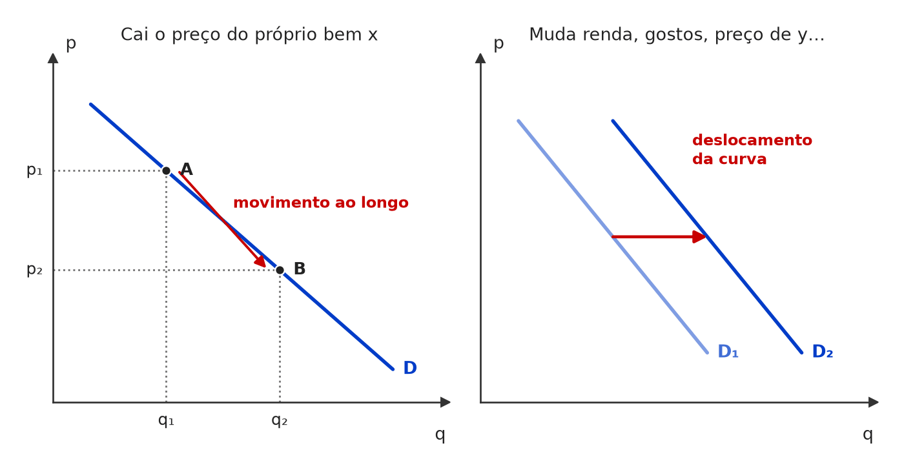
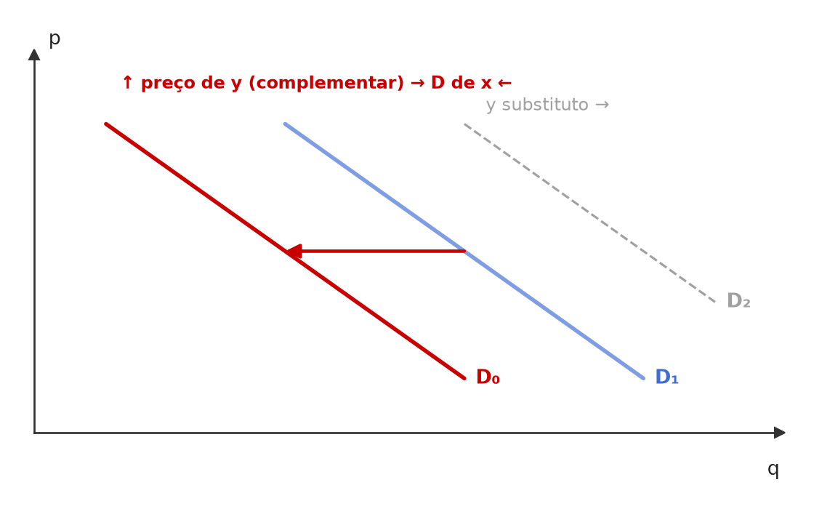
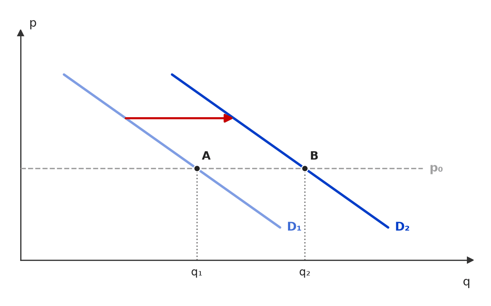

[C/E - CEBRASPE › IRBr/CACD/2004 › Demanda: determinantes e deslocamentos]Julgue o item a seguir, relativo à demanda e aos seus determinantes. Item: O recrudescimento, na Ásia, da gripe do frango, conhecida cientificamente como influenza aviária, abre novos mercados para o produto brasileiro e desloca, para cima e para a direita, a curva de demanda por carne de frango no Brasil. | ✅ CERTO O recrudescimento, na Ásia, da gripe do frango, conhecida cientificamente como influenza aviária, abre novos mercados para o produto brasileiro e desloca, para cima e para a direita, a curva de demanda por carne de frango no Brasil. 🎯 Em poucas palavras: A gripe derruba a oferta asiática; importadores buscam o substituto brasileiro. Mais compradores (externos) a cada preço = demanda pelo frango produzido no Brasil para a direita/cima. 📖 Destrinchando o tema:
🧐 Dissecando a redação do item: [paráfrase fiel · detalhe] O item testa se o candidato identifica que um choque de oferta lá fora vira choque de demanda aqui. A expressão “no Brasil” gera dúvida (consumo doméstico × demanda pelo produto brasileiro); a banca a usa no sentido da demanda total enfrentada pelos produtores brasileiros, inclusive a externa. 😈 Para dificultar:
|
[C/E - Nidi/Jacqueline Bueno › Simulado Novembro/2024 › Demanda: determinantes e deslocamentos]A teoria da demanda aborda como os consumidores tomam decisões sobre a quantidade de bens que adquirem com base em fatores como preços, preferências, restrições orçamentárias e a relação entre os tipos de bens. Considerando a Teoria do Consumidor e os fatores que contribuem para formação da Curva de Demanda, avalie como certo ou errado (C ou E) o item a seguir. Item: A curva de demanda individual pode se deslocar para a direita se houver um aumento na renda do consumidor, considerando que o bem seja normal. | ✅ CERTO A curva de demanda individual pode se deslocar para a direita se houver um aumento na renda do consumidor, considerando que o bem seja normal. 🎯 Em poucas palavras: Bem normal tem elasticidade-renda positiva: renda maior → mais quantidade demandada a cada preço → curva inteira para a direita. 📖 Destrinchando o tema:
🧐 Dissecando a redação do item: [literalidade · modulador relativo] Item de manual, com dupla proteção: o “pode” e a condição “considerando que o bem seja normal”. A versão ERRADA trocaria normal por inferior ou deslocamento por movimento. 😈 Para dificultar:
|
[C/E - Nidi/Jacqueline Bueno › Simulado Novembro/2024 › Demanda: determinantes e deslocamentos]A teoria da demanda aborda como os consumidores tomam decisões sobre a quantidade de bens que adquirem com base em fatores como preços, preferências, restrições orçamentárias e a relação entre os tipos de bens. Considerando a Teoria do Consumidor e os fatores que contribuem para formação da Curva de Demanda, avalie como certo ou errado (C ou E) o item a seguir. Item: Se a taxa para carregamento de carros elétricos em estações públicas é substancialmente reduzida, a demanda por este tipo de automóvel tende a aumentar, deslocando sua curva de demanda para a direita. | ✅ CERTO Se a taxa para carregamento de carros elétricos em estações públicas é substancialmente reduzida, a demanda por este tipo de automóvel tende a aumentar, deslocando sua curva de demanda para a direita. 🎯 Em poucas palavras: Recarga e carro elétrico são complementares: recarga mais barata reduz o custo de usar o carro e aumenta a demanda por ele a cada preço — curva para a direita. 📖 Destrinchando o tema:
🧐 Dissecando a redação do item: [literalidade · modulador relativo] Aplicação direta de complementaridade, amortecida pelo “tende a”. A banca poderia derrubar o item chamando os bens de substitutos ou dizendo que a curva se desloca para a esquerda. 😈 Para dificultar:
|
[C/E - Nidi/Jacqueline Bueno › Simulado Novembro/2024 › Demanda: determinantes e deslocamentos]A teoria da demanda aborda como os consumidores tomam decisões sobre a quantidade de bens que adquirem com base em fatores como preços, preferências, restrições orçamentárias e a relação entre os tipos de bens. Considerando a Teoria do Consumidor e os fatores que contribuem para formação da Curva de Demanda, avalie como certo ou errado (C ou E) o item a seguir. Item: Considerando que os agentes microeconômicos são racionais e tomam suas decisões considerando o princípio conhecido como coeteris paribus, mudanças no preço de um bem não afetam a posição da curva de demanda dos bens que são substitutos, uma vez que o consumidor avalia cada um deles de forma isolada. | ❌ ERRADO Considerando que os agentes microeconômicos são racionais e tomam suas decisões considerando o princípio conhecido como coeteris paribus, mudanças no preço de um bem não afetam a posição da curva de demanda dos bens que são substitutos, uma vez que o consumidor avalia cada um deles de forma isolada. 🎯 Em poucas palavras: O preço de um substituto é justamente um deslocador da demanda: se a manteiga encarece, a curva de demanda da margarina vai para a direita. Coeteris paribus é hipótese do analista, não regra de decisão do consumidor. 📖 Destrinchando o tema:
🧐 Dissecando a redação do item: [nexo indevido · troca de conceito] O item usa uma premissa pomposa (racionalidade + ceteris paribus) para justificar uma conclusão falsa, e transforma uma hipótese de análise em comportamento do consumidor. O “avalia cada um de forma isolada” contraria a própria definição de substituto. 😈 Para dificultar:
✍️ Reescrita correta: Considerando que os agentes microeconômicos são racionais e que a curva de demanda é traçada sob a hipótese coeteris paribus, mudanças no preço de um bem afetam a posição da curva de demanda dos bens que são substitutos, uma vez que o consumidor compara os bens entre si, pelos preços relativos. |
[C/E - Daniel – Economia CACD (Telegram) › Demanda: determinantes e deslocamentos]Julgue o item a seguir, relativo à teoria do consumidor e à lei da demanda. Item: A curva de demanda é descendente: de acordo com a teoria do consumidor, a curva de demanda tem uma inclinação negativa, o que significa que, à medida que o preço de um bem aumenta, a quantidade demandada por esse bem diminui. Essa relação inversa entre preço e quantidade demandada é conhecida como Lei da Demanda. | ✅ CERTO A curva de demanda é descendente: de acordo com a teoria do consumidor, a curva de demanda tem uma inclinação negativa, o que significa que, à medida que o preço de um bem aumenta, a quantidade demandada por esse bem diminui. Essa relação inversa entre preço e quantidade demandada é conhecida como Lei da Demanda. 🎯 Em poucas palavras: Definição de manual: lei da demanda = relação inversa entre o preço de um bem e a quantidade demandada dele, ceteris paribus; por isso a curva é negativamente inclinada. 📖 Destrinchando o tema:
🧐 Dissecando a redação do item: [literalidade] Paráfrase direta do manual; não há armadilha no texto. O risco é o candidato desconfiar por lembrar do bem de Giffen — mas o item descreve a regra geral, sem dizer “sempre” ou “todos os bens”. 😈 Para dificultar:
|
[C/E - Nabuco › Demanda: determinantes e deslocamentos]Em relação à oferta e demanda e à classificação dos bens, julgue o item, considerando o Gráfico 1, que representa a curva de demanda do bem x, que se desloca no tempo de D1 para D2.  Gráfico 1 — curva de demanda do bem x, que se desloca no tempo de D1 para D2. (figura redesenhada; traçado aproximado) Item: Com base no gráfico 1, que representa a curva de demanda do bem x, que se desloca no tempo de D1 para D2, é correto afirmar que o deslocamento da curva de demanda em questão pode ser explicado por uma redução do preço do bem x. | ❌ ERRADO Com base no gráfico 1, que representa a curva de demanda do bem x, que se desloca no tempo de D1 para D2, é correto afirmar que o deslocamento da curva de demanda em questão pode ser explicado por uma redução do preço do bem x. 🎯 Em poucas palavras: Variação no preço do próprio bem não desloca a curva de demanda: provoca movimento ao longo dela. A curva só se desloca quando muda outro determinante. 📖 Destrinchando o tema:
📈 No gráfico:  À esquerda, cai o preço do próprio bem x e o consumidor anda AO LONGO da mesma curva (A → B). À direita, muda outro determinante da demanda e a CURVA INTEIRA se desloca (D₁ → D₂), como no Gráfico 1. 🧐 Dissecando a redação do item: [troca de conceito · nexo indevido] O item troca “variação da demanda” por “variação da quantidade demandada”: atribui o deslocamento à única variável que, por construção, não pode deslocá-la. Pista: o enunciado fala em curva que se desloca e oferece como causa o preço do próprio bem. 😈 Para dificultar:
✍️ Reescrita correta: Com base no gráfico 1, que representa a curva de demanda do bem x, que se desloca no tempo de D1 para D2, é correto afirmar que o deslocamento da curva de demanda em questão não pode ser explicado por uma redução do preço do bem x, que provocaria apenas movimento ao longo de D1. |
[C/E - Nabuco › Demanda: determinantes e deslocamentos]Em relação à oferta e demanda e à classificação dos bens, julgue o item, considerando o Gráfico 1, que representa a curva de demanda do bem x, que se desloca no tempo de D1 para D2. Gráfico 1 — curva de demanda do bem x, que se desloca no tempo de D1 para D2. (figura redesenhada; traçado aproximado) Item: Com base no gráfico 1, que representa a curva de demanda do bem x, que se desloca no tempo de D1 para D2, é correto afirmar que o deslocamento da curva de demanda em questão pode ser explicado por um aumento no preço do bem y, se este for complementar do bem x. | ❌ ERRADO Com base no gráfico 1, que representa a curva de demanda do bem x, que se desloca no tempo de D1 para D2, é correto afirmar que o deslocamento da curva de demanda em questão pode ser explicado por um aumento no preço do bem y, se este for complementar do bem x. 🎯 Em poucas palavras: Se y é complementar de x, encarecer y reduz a demanda por x (curva para a esquerda). O deslocamento para a direita exigiria y substituto. 📖 Destrinchando o tema:
📈 No gráfico:  Se y é complementar de x, o aumento do preço de y desloca a demanda de x para a ESQUERDA (D1 → D0) — o contrário do Gráfico 1. Para ir de D1 a D2, y teria de ser substituto. 🧐 Dissecando a redação do item: [troca de conceito] O mecanismo (preço de outro bem desloca a curva) está certo; o erro está só no rótulo da relação: “complementar” no lugar de “substituto”. Itens desse tipo se resolvem pelo sinal: ↑py + complementar = ↓Dx. 🧠 Mnemônico:
✍️ Reescrita correta: Com base no gráfico 1, que representa a curva de demanda do bem x, que se desloca no tempo de D1 para D2, é correto afirmar que o deslocamento da curva de demanda em questão pode ser explicado por um aumento no preço do bem y, se este for substituto do bem x. |
[C/E - Nabuco › Demanda: determinantes e deslocamentos]Em relação à oferta e demanda e à classificação dos bens, julgue o item, considerando o Gráfico 1, que representa a curva de demanda do bem x, que se desloca no tempo de D1 para D2. Gráfico 1 — curva de demanda do bem x, que se desloca no tempo de D1 para D2. (figura redesenhada; traçado aproximado) Item: Com base no gráfico 1, que representa a curva de demanda do bem x, que se desloca no tempo de D1 para D2, é correto afirmar que o deslocamento da curva de demanda em questão pode ser explicado por um aumento na renda, se x for um bem inferior. | ❌ ERRADO Com base no gráfico 1, que representa a curva de demanda do bem x, que se desloca no tempo de D1 para D2, é correto afirmar que o deslocamento da curva de demanda em questão pode ser explicado por um aumento na renda, se x for um bem inferior. 🎯 Em poucas palavras: Para bem inferior, renda maior reduz a demanda (curva para a esquerda). D1 → D2 com aumento de renda exige bem normal. 📖 Destrinchando o tema:
🧐 Dissecando a redação do item: [troca de conceito] Mesma estrutura dos itens irmãos: o deslocador (renda) é legítimo, a classificação do bem é a errada. Resolva pelo sinal: ↑m × (η < 0) = ↓D. 😈 Para dificultar:
✍️ Reescrita correta: Com base no gráfico 1, que representa a curva de demanda do bem x, que se desloca no tempo de D1 para D2, é correto afirmar que o deslocamento da curva de demanda em questão pode ser explicado por um aumento na renda, se x for um bem normal. |
[C/E - Nabuco › Demanda: determinantes e deslocamentos]Em relação aos princípios da teoria do consumidor e da teoria da demanda, julgue o item que se segue. Item: A demanda de um bem normal é função crescente do preço do bem substituto. | ✅ CERTO A demanda de um bem normal é função crescente do preço do bem substituto. 🎯 Em poucas palavras: Substitutos têm elasticidade-preço cruzada positiva: se o substituto encarece, a demanda pelo bem aumenta. Logo, ela cresce com o preço do substituto. 📖 Destrinchando o tema:
🧐 Dissecando a redação do item: [literalidade · detalhe] A banca põe “bem normal” para criar dúvida (quem acha que é condição necessária pode desconfiar). “Função crescente de py” é só a tradução de εxy > 0. 😈 Para dificultar:
|
[C/E - Banca não identificada › Demanda: determinantes e deslocamentos]Julgue o item a seguir, relativo à demanda e aos seus determinantes. Item: Suponha que o aumento substancial dos preços cobrados para o estacionamento de veículos nas grandes cidades eleve a quantidade demandada de corridas de táxi nesses locais. Dessa forma, conclui-se que esse aumento de preços provoca um deslocamento ao longo da curva de demanda por serviços de táxi. | ❌ ERRADO Suponha que o aumento substancial dos preços cobrados para o estacionamento de veículos nas grandes cidades eleve a quantidade demandada de corridas de táxi nesses locais. Dessa forma, conclui-se que esse aumento de preços provoca um deslocamento ao longo da curva de demanda por serviços de táxi. 🎯 Em poucas palavras: O preço do estacionamento não está nos eixos do gráfico do táxi: é um determinante externo da demanda. Quando ele muda, a curva inteira de demanda por táxi se desloca para a direita; não há movimento ao longo dela. 📖 Destrinchando o tema:
📈 No gráfico:  O preço da corrida de táxi não mudou (p₀); o estacionamento mais caro desloca a demanda por táxi para a direita (D₁ → D₂), e a quantidade passa de q₁ para q₂ AO MESMO PREÇO — sinal de que a curva andou, não de movimento ao longo dela. 🧐 Dissecando a redação do item: [troca de conceito] O cenário é verdadeiro (estacionamento caro → mais corridas); o erro está só na conclusão, que troca “deslocamento da curva” por “deslocamento ao longo da curva”. A palavra “quantidade demandada” no enunciado funciona como isca. Pista: a variável que mudou não é o preço da corrida. 😈 Para dificultar:
✍️ Reescrita correta: Suponha que o aumento substancial dos preços cobrados para o estacionamento de veículos nas grandes cidades eleve a quantidade demandada de corridas de táxi nesses locais. Dessa forma, conclui-se que esse aumento de preços provoca um deslocamento |
[C/E - Banca não identificada › Demanda: determinantes e deslocamentos]Julgue o item a seguir, relativo à demanda e aos seus determinantes. Item: Uma elevação do nível de renda da economia desloca a curva de demanda por um determinado bem para a direita, indicando elevação da quantidade demandada mesmo sem uma alteração no preço do produto. | ✅ CERTO Uma elevação do nível de renda da economia desloca a curva de demanda por um determinado bem para a direita, indicando elevação da quantidade demandada mesmo sem uma alteração no preço do produto. 🎯 Em poucas palavras: Para um bem normal, mais renda desloca a demanda para a direita: compra-se mais ao mesmo preço. O item vale tomando o caso típico; para um bem inferior, a curva iria para a esquerda. ⚠️ Gabarito contestável: o item não diz que o bem é normal. Para um bem inferior (pão dormido, transporte coletivo de baixa qualidade), o aumento de renda desloca a demanda para a esquerda. O gabarito CERTO pressupõe o caso padrão; a leitura mais rigorosa seria ERRADO pela generalização a “um determinado bem” qualquer. 📖 Destrinchando o tema:
🧐 Dissecando a redação do item: [detalhe · modulador relativo] O item é verdadeiro no caso padrão (bem normal) e usa “quantidade demandada” de modo frouxo; quem conhece a exceção do bem inferior hesita. Em itens assim, a banca costuma considerar o caso típico, salvo se o texto puxar a exceção. 😈 Para dificultar:
|
[C/E - Banca não identificada › Demanda: determinantes e deslocamentos]Julgue o item a seguir, relativo à demanda, à oferta e ao equilíbrio de mercado. Item: Uma campanha midiática anuncia as vantagens de um determinado bem normal X. É de se esperar que o volume de negócios de curto prazo no mercado aumente porque haverá um deslocamento, para a direita, da curva de demanda. | ✅ CERTO Uma campanha midiática anuncia as vantagens de um determinado bem normal X. É de se esperar que o volume de negócios de curto prazo no mercado aumente porque haverá um deslocamento, para a direita, da curva de demanda. 🎯 Em poucas palavras: A campanha muda as preferências a favor de X: a demanda se desloca para a direita e, com a oferta inalterada, sobem o preço e a quantidade transacionada — o volume de negócios aumenta. 📖 Destrinchando o tema:
📈 No gráfico:  A campanha muda as preferências e desloca a demanda para a direita (D₁ → D₂); com a oferta parada, o equilíbrio vai de E₁ a E₂: sobem o preço e a quantidade transacionada (volume de negócios). 🧐 Dissecando a redação do item: [paráfrase fiel · detalhe] O item encadeia causa (preferências) → deslocamento → resultado de mercado, e tudo está certo. Os riscos são o ruído: “bem normal” (que tenta puxar para efeito-renda) e “curto prazo” (que sugere que nada mudaria). 😈 Para dificultar:
|
[C/E - Banca não identificada › Demanda: determinantes e deslocamentos]Julgue o item a seguir, relativo à demanda, à oferta e ao equilíbrio de mercado. Item: O aluguel médio de imóveis poderá cair quando há mudança na preferência dos usuários em face da desvalorização de uma região. | ✅ CERTO O aluguel médio de imóveis poderá cair quando há mudança na preferência dos usuários em face da desvalorização de uma região. 🎯 Em poucas palavras: A região perde atratividade: a demanda por imóveis ali se desloca para a esquerda e, com a oferta de imóveis dada, o preço do serviço de moradia — o aluguel — cai. 📖 Destrinchando o tema:
🧐 Dissecando a redação do item: [modulador relativo] O “poderá” protege o item: a queda é o efeito esperado ceteris paribus, ainda que outro choque simultâneo (alta de juros, nova lei) pudesse compensá-lo. A banca usa linguagem do cotidiano (“usuários”, “aluguel médio”) para esconder um caso simples de deslocamento da demanda. 😈 Para dificultar:
|
[C/E - Banca não identificada › Demanda: determinantes e deslocamentos]Julgue o item a seguir, relativo à demanda, à oferta e ao equilíbrio de mercado. Item: O aumento do preço dos carros levará a uma queda na demanda por motocicleta. | ❌ ERRADO O aumento do preço dos carros levará a uma queda na demanda por motocicleta. 🎯 Em poucas palavras: Carro e motocicleta são substitutos (atendem à mesma necessidade de transporte individual): encarecer o carro eleva a demanda por motos. 📖 Destrinchando o tema:
🧐 Dissecando a redação do item: [inversão · troca de conceito] O item aplica a regra dos complementares a um par de substitutos e inverte o sentido do efeito. Pista: perguntar “compro um no lugar do outro ou junto com o outro?” — moto e carro são “no lugar”. 😈 Para dificultar:
✍️ Reescrita correta: O aumento do preço dos carros levará a um aumento na demanda por motocicleta. |
[C/E - Banca não identificada › Demanda: determinantes e deslocamentos]Julgue o item a seguir, relativo à demanda, à oferta e ao equilíbrio de mercado. Item: A mudança no preço das bicicletas não levará a um deslocamento da curva de demanda por elas. | ✅ CERTO A mudança no preço das bicicletas não levará a um deslocamento da curva de demanda por elas. 🎯 Em poucas palavras: O preço do próprio bem está no eixo do gráfico: alterá-lo provoca movimento ao longo da curva de demanda, nunca deslocamento dela. 📖 Destrinchando o tema:
🧐 Dissecando a redação do item: [literalidade] Item-espelho do clássico “deslocamento × movimento”: verdadeiro pela própria definição de curva de demanda. A negação (“não levará”) é posta para quem associa automaticamente “mudança de preço” a “mudança de demanda”. 😈 Para dificultar:
|
[C/E - Banca não identificada › Demanda: determinantes e deslocamentos]Julgue o item a seguir, relativo à demanda, à oferta e ao equilíbrio de mercado. Item: De acordo com a lei da demanda, existe uma relação positiva entre quantidade demandada e preço. | ❌ ERRADO De acordo com a lei da demanda, existe uma relação positiva entre quantidade demandada e preço. 🎯 Em poucas palavras: A lei da demanda estabelece relação negativa (inversa): tudo o mais constante, preço maior → quantidade demandada menor. Relação positiva é a lei da oferta. 📖 Destrinchando o tema:
🧐 Dissecando a redação do item: [inversão] Troca de uma única palavra (negativa → positiva), que transforma a lei da demanda na lei da oferta. A banca costuma apresentar o mesmo item nas duas versões seguidas para testar a atenção ao sinal. 😈 Para dificultar:
✍️ Reescrita correta: De acordo com a lei da demanda, existe uma relação negativa entre quantidade demandada e preço. |
[C/E - Banca não identificada › Demanda: determinantes e deslocamentos]Julgue o item a seguir, relativo à demanda, à oferta e ao equilíbrio de mercado. Item: De acordo com a lei da demanda, existe uma relação negativa entre quantidade demandada e preço. | ✅ CERTO De acordo com a lei da demanda, existe uma relação negativa entre quantidade demandada e preço. 🎯 Em poucas palavras: Correto: ceteris paribus, preço e quantidade demandada andam em sentidos opostos — por isso a curva de demanda é negativamente inclinada. 📖 Destrinchando o tema:
🧐 Dissecando a redação do item: [literalidade] Definição de manual, sem armadilha interna. A dificuldade está fora do item: a banca costuma aplicar a mesma frase com “positiva” (ERRADO) ou com “oferta” no lugar de “demanda”, e quem lê depressa não percebe a troca. 😈 Para dificultar:
|
[C/E - Banca não identificada › Demanda: determinantes e deslocamentos]Julgue o item a seguir, relativo à demanda, à oferta e ao equilíbrio de mercado. Item: Um aumento do gasto com propaganda e marketing tende a deslocar a curva de demanda para a direita, aumentando a demanda do bem. | ✅ CERTO Um aumento do gasto com propaganda e marketing tende a deslocar a curva de demanda para a direita, aumentando a demanda do bem. 🎯 Em poucas palavras: Propaganda atua sobre gostos e preferências: mais consumidores querem o bem a cada preço, e a curva de demanda se desloca para a direita. 📖 Destrinchando o tema:
🧐 Dissecando a redação do item: [modulador relativo · paráfrase fiel] “Tende a” torna o item seguro. A frase usa “demanda” no sentido técnico correto (curva), e é aí que a banca costuma errar de propósito, trocando por “quantidade demandada”. 😈 Para dificultar:
|
[C/E - Banca não identificada › Demanda: determinantes e deslocamentos]Julgue o item a seguir, relativo à demanda, à oferta e ao equilíbrio de mercado. Item: A demanda (ou procura) representa aquilo que o consumidor deseja adquirir, o que significa que ele vai necessariamente adquirir/consumir. | ❌ ERRADO A demanda (ou procura) representa aquilo que o consumidor deseja adquirir, o que significa que ele vai necessariamente adquirir/consumir. 🎯 Em poucas palavras: Demanda é um desejo ou plano de compra a cada preço, não a compra realizada. Desejar não garante adquirir — o “necessariamente” derruba o item. 📖 Destrinchando o tema:
🧐 Dissecando a redação do item: [modulador absoluto · meia-verdade] A 1ª oração é a definição correta; o erro está na conclusão enxertada com “necessariamente”, que converte intenção em fato. Pista: advérbio absoluto colado a uma definição econômica costuma ser o ponto de quebra. 😈 Para dificultar:
✍️ Reescrita correta: A demanda (ou procura) representa aquilo que o consumidor deseja adquirir, o que não significa que ele vá necessariamente adquirir/consumir. |
[C/E - Banca não identificada › Demanda: determinantes e deslocamentos]Julgue o item a seguir, relativo à demanda, à oferta e ao equilíbrio de mercado. Item: São muitos os fatores que alteram a demanda, mas o fator central é a quantidade. | ❌ ERRADO São muitos os fatores que alteram a demanda, mas o fator central é a quantidade. 🎯 Em poucas palavras: O determinante central da quantidade demandada é o preço do próprio bem: Qd = f(P). A quantidade é a variável explicada, não o fator que explica. 📖 Destrinchando o tema:
🧐 Dissecando a redação do item: [troca de conceito · inversão] O item troca a variável independente (preço) pela dependente (quantidade). A 1ª oração (“muitos fatores”) é verdadeira e serve de isca. 😈 Para dificultar:
✍️ Reescrita correta: São muitos os fatores que alteram a demanda, mas o fator central é o preço. |
[C/E - Banca não identificada › Demanda: determinantes e deslocamentos]Julgue o item a seguir, relativo à demanda, à oferta e ao equilíbrio de mercado. Item: A curva de demanda tem inclinação negativa, demonstrando que os consumidores estão dispostos a comprar mais a um preço mais baixo, à medida que o produto se torna relativamente mais barato e a renda real do consumidor aumenta. | ✅ CERTO A curva de demanda tem inclinação negativa, demonstrando que os consumidores estão dispostos a comprar mais a um preço mais baixo, à medida que o produto se torna relativamente mais barato e a renda real do consumidor aumenta. 🎯 Em poucas palavras: O item resume os dois efeitos da queda de preço: efeito substituição (o bem fica relativamente mais barato) e efeito renda (o poder de compra aumenta). 📖 Destrinchando o tema:
🧐 Dissecando a redação do item: [paráfrase fiel · detalhe] A frase longa embute a decomposição substituição + renda sem nomeá-la. Quem não reconhece “relativamente mais barato” e “renda real” como os dois efeitos pode estranhar a justificativa e marcar ERRADO. 😈 Para dificultar:
|
[C/E - Banca não identificada › Demanda: determinantes e deslocamentos]Julgue o item a seguir, relativo à demanda, à oferta e ao equilíbrio de mercado. Item: Tudo o mais permanecendo constante, o deslocamento de uma curva de demanda para a direita é resultante de uma redução na renda. | ❌ ERRADO Tudo o mais permanecendo constante, o deslocamento de uma curva de demanda para a direita é resultante de uma redução na renda. 🎯 Em poucas palavras: Para o caso geral (bem normal), redução de renda desloca a demanda para a esquerda. Para a direita, seria preciso um aumento de renda. 📖 Destrinchando o tema:
🧐 Dissecando a redação do item: [inversão] Inverte o sentido da renda para o caso usual. A banca aposta que o candidato pense só em bem inferior e marque CERTO; sem a ressalva expressa no item, prevalece o bem normal. 😈 Para dificultar:
✍️ Reescrita correta: Tudo o mais permanecendo constante, o deslocamento de uma curva de demanda para a direita é resultante de um aumento na renda. |